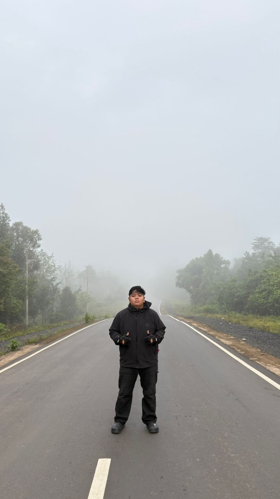

HOME
BIODATA
GALLERY
VIDEO

Biodata Saya
Nama
Muhammad Fikri Haikal
Nomor Induk Mahasiswa
2310715310006
Fakultas / Jurusan
Perikanan dan Ilmu Kelautan / Sosial Ekonomi Perikanan
Tempat, Tanggal Lahir
Batulicin, 22 September 2004
Kontak
kalfikkz666@gmail.com | @fikrii.haikall